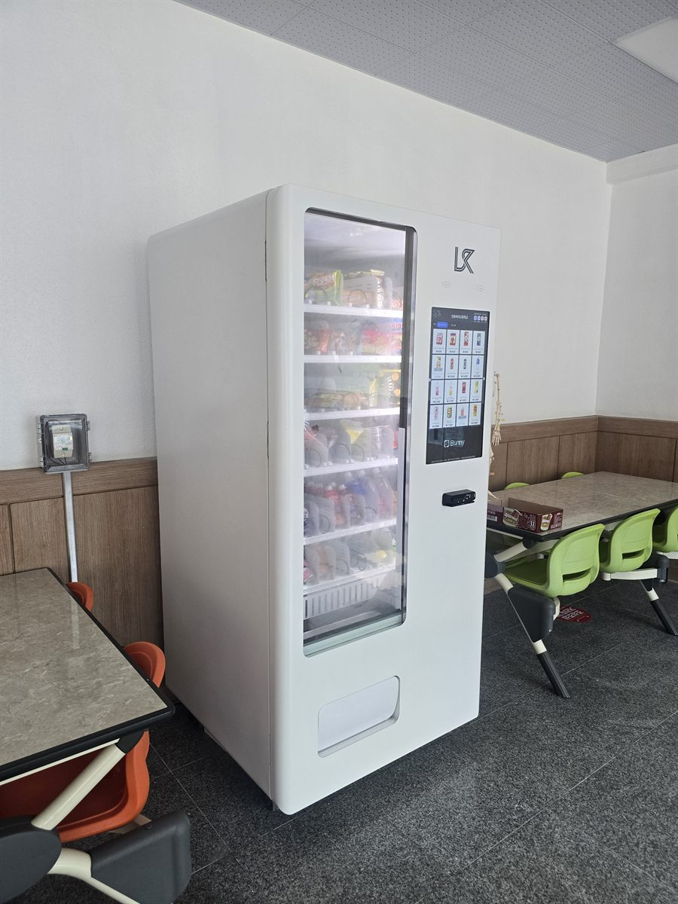

중구 무인자판기 설치
고등학교 휴게 공간 냉장·스낵 겸용 자판기

학교 자판기를 놓을 때 가장 먼저 듣는 이야기는 매출이 아닙니다. "쉬는 시간이 10분인데 줄이 안 빠진다"는 걱정입니다. 상가나 사무실은 손님이 하루 종일 흩어져 들어오지만, 학교는 종이 울리는 그 몇 분에 수요가 통째로 몰립니다. 같은 한 대를 놓아도 자리와 층 구성에 따라 결과가 크게 갈리는 이유가 여기에 있습니다.
이번 중구 현장도 사정이 비슷했습니다. 매점 운영이 줄면서 학생들이 간식을 사려면 교문 밖으로 나가야 했고, 점심시간마다 그 왕복이 반복됐습니다. 학교 쪽에서 원한 것은 사람이 상주하지 않아도 되고, 줄이 길어지지 않는 방식이었습니다.
중구 고등학교에 맞춘 구성
자리는 교실 복도가 아니라 식탁이 놓인 휴게 공간 벽면으로 잡았습니다. 복도는 이동 동선과 구매 동선이 정면으로 부딪혀서, 사는 사람 서너 명만 서 있어도 지나가는 길이 막힙니다. 휴게 공간은 어차피 앉아 있는 곳이라 기다림이 줄처럼 보이지 않고, 먹고 난 자리를 정리하기도 수월합니다. 기계는 뒤쪽으로 열을 빼기 때문에 벽에서 조금 띄워 세웠습니다.
품목은 학교라는 점을 먼저 고려했습니다. 학교 안에서는 고카페인 음료를 팔 수 없습니다(어린이 식생활안전관리 특별법). 그래서 에너지드링크와 커피류는 아예 뺐고, 생수와 이온음료를 가장 많은 칸에 깔았습니다. 그 위로 과자와 작은 빵, 시리얼바 같은 간단한 간식을 올렸습니다. 결제는 카드와 간편결제만 열었습니다. 요즘 학생들은 현금을 거의 들고 다니지 않아 현금함은 오히려 관리 부담만 늘립니다.
- 기종 — 냉장 + 상온 스낵 겸용 스마트 자판기 1대, 세로 화면형
- 품목 — 생수·이온음료 / 과자·크래커 / 작은 빵·시리얼바 (고카페인 음료 제외)
- 자리 — 복도 아닌 휴게 공간 벽면, 식탁 옆 동선과 떨어뜨려 배치
- 결제·관리 — 카드·간편결제 전용, 현금함 없음, 재고·매출 원격 확인
놓고 보니 좋았던 점, 손봐야 했던 점
좋아진 쪽부터 적습니다. 교문 밖으로 나가는 일이 눈에 띄게 줄었습니다. 결제가 몇 초에 끝나니 쉬는 시간 안에 충분히 소화됐고, 남은 수량을 휴대전화로 보고 보충 날짜를 잡을 수 있어 담당 선생님이 기계를 들여다보러 올 필요가 없어졌습니다.
손봐야 했던 점도 그대로 적습니다. 첫째, 방학이 있습니다. 상가 자판기와 달리 학교는 일 년에 두 번, 매출이 바닥으로 떨어지는 구간이 정해져 있습니다. 이 기간을 감안하지 않고 월 단위로만 계산하면 숫자가 어긋납니다. 둘째, 처음 한 달은 생수가 먼저 비고 과자가 남았습니다. 판매 기록을 보고 음료 칸을 한 줄 늘렸습니다. 셋째, 학교는 바로 설치가 되지 않는 경우가 있습니다. 기계를 들이기 전에 학교 내부 협의 절차를 거쳐야 하는 곳이 많아, 일정은 넉넉히 잡는 편이 안전합니다.
중구, 이런 자리가 잘 맞습니다
중구는 사는 사람보다 들어와서 일하는 사람이 훨씬 많은 구입니다. 명동과 소공동, 회현동 일대는 관광과 쇼핑 상권이고, 을지로와 충무로는 사무실과 인쇄·제조 소공장이 빼곡히 들어선 구역입니다. 반면 신당동·황학동·다산동·약수동·청구동은 주거지가 이어지는 쪽이고, 필동과 장충동에는 동국대(동국대학교)를 비롯해 학교가 모여 있습니다. 중림동은 역세권 아파트와 오래된 골목이 섞여 있습니다.
이렇게 성격이 갈리는 구에서는 자판기 성패가 "유동 인구가 많은가"보다 "그 자리에 머무는 시간이 있는가"로 결정됩니다. 학교·학원·사무실 휴게실처럼 같은 사람이 매일 같은 시간에 머무는 공간이 회전이 꾸준합니다. 반대로 사람은 많아도 걸음을 멈추지 않는 길목은 생각만큼 팔리지 않습니다.
중구 서비스 지역
명동 · 을지로 · 충무로 · 신당동 · 황학동 · 중림동 · 회현동 · 소공동 · 장충동 · 광희동 · 필동 · 약수동 · 청구동 · 다산동
중구 전역에서 방문 상담이 가능합니다. 맞닿은 종로구·용산구·성동구 방면도 같은 담당자가 함께 다닙니다. 지역별 안내는 중구 무인자판기 설치 안내 페이지에서 보실 수 있습니다.
중구 무인자판기, 이렇게 시작하시면 됩니다
전화나 상담 신청으로 주소만 남겨 주시면 됩니다. 담당자가 나가서 놓을 자리의 벽면 길이와 천장 높이, 콘센트 위치, 사람이 지나가는 동선을 확인합니다. 학교나 기관이라면 여기에 관리 담당자와 보충 출입 방법을 한 가지 더 맞춥니다. 수업 중에는 드나들기 어려우니, 보충 시간대를 미리 정해 두는 편이 서로 편합니다. 자리가 정해지면 설치일만 잡으면 되고, 설치비는 따로 받지 않습니다. 기계는 구입·렌탈·임대 중에서 고르실 수 있습니다.
건물을 새로 짓거나 내부를 고치는 중이라면 도면 단계에서 벽면 한 칸과 콘센트 한 구를 빼 두시기를 권해 드립니다. 공사가 끝난 뒤에 자리를 찾으면 남는 곳은 대체로 구석이나 계단 밑입니다. 눈에 띄지 않는 자리는 같은 기계를 놓아도 결과가 다릅니다.
관련 검색어: 중구무인자판기 · 중구고등학교자판기 · 명동자판기설치 · 을지로무인자판기 · 신당동자판기
※ 사진은 픽프리가 시공한 설치 사례이며, 글에 적힌 지역의 현장 사진은 아닙니다.
함께 많이 찾는 키워드
중구 무인자판기 · 중구 자판기 설치 · 중구 자판기 임대 · 중구 자판기 렌탈 · 서울 무인자판기 · 서울 자판기 설치 · 명동 자판기 · 을지로 자판기 · 충무로 자판기 · 신당동 자판기 · 황학동 자판기 · 중림동 자판기 · 회현동 자판기 · 소공동 자판기 · 장충동 자판기 · 필동 자판기 · 약수동 자판기 · 다산동 자판기 · 고등학교 자판기 · 학교 자판기 설치 · 학교 매점 자판기 · 냉장 자판기 · 스낵 자판기 · 스마트 자판기 · 카드 자판기 · 간편결제 자판기 · 무인키오스크 설치 · 자판기 설치비용 · 자판기 원격관리 · 무인창업